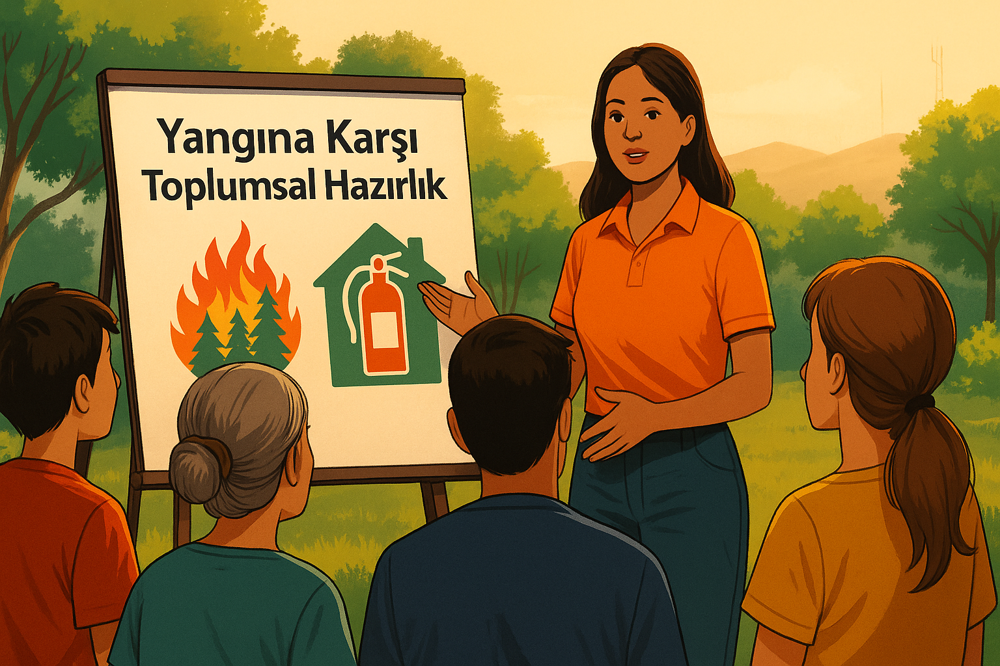

🌱 Yangınlara Karşı Toplumsal Hazırlık
Yayın Tarihi: 28 Mayıs 2025
Yangınlar sadece doğayı değil, insan yaşamını, ekonomiyi ve geleceğimizi de etkileyen ciddi afetlerdir. Yangınlarla mücadelede yalnızca kamu kurumlarının değil, tüm toplumun katkısı çok önemlidir.
🏘️ Belediyelerin Rolü
Yerel yönetimler, yangınlara karşı farkındalık yaratmada önemli bir görev üstlenir. Eğitim kampanyaları düzenleyerek vatandaşlara bilgilendirici broşürler dağıtabilir, gönüllü yangın ekipleri kurulmasını destekleyebilirler.
Ayrıca mahallelerde kurulan uyarı sistemleri, sirenler veya mobil uygulamalar sayesinde tehlike anında hızlı tepki verilmesini sağlarlar.
🧑🚒 Gönüllülerin Gücü
Her birey küçük bir katkıyla büyük değişimler yaratabilir. Gönüllüler, yangın öncesi eğitimlerde görev alabilir, yaşlılara ve çocuklara bilgilendirici sunumlar yapabilir. Yangın sonrası ilk yardım, su dağıtımı veya yardım toplama gibi destek faaliyetlerinde de aktif rol alabilirler.
🎓 Gençlik ve Eğitim Kurumları
Okullarda "Afet Farkındalık Günü" gibi özel etkinliklerle öğrenciler bilinçlendirilebilir. Öğrenciler kendi mahallelerinde küçük bilgilendirme kampanyaları başlatarak hem bilgilerini paylaşır hem de sorumluluk bilinci kazanırlar.
🎨 Çocuklar İçin Yaratıcı Öğrenme
Küçük yaştaki çocuklar için yangın konusunda çizgi filmler, boyama kitapları, hikâyeler veya kukla gösterileri hazırlanabilir. Bu sayede çocuklar hem eğlenerek öğrenir hem de kriz anlarında nasıl davranmaları gerektiğini fark ederler.
🤝 Toplum Olma Bilinci
Topluluk olarak organize olmak, dayanışma ruhunu güçlendirir. Apartmanlar veya siteler kendi içlerinde yangın eğitimi günleri düzenleyebilir, ilkyardım ve tahliye planları hazırlanabilir.
Sonuç olarak yangınlara karşı hazırlıklı olmak sadece teknik ekipman meselesi değildir; bir bilinç, bir sorumluluk meselesidir. Unutma: Birlikte önler, birlikte koruruz.